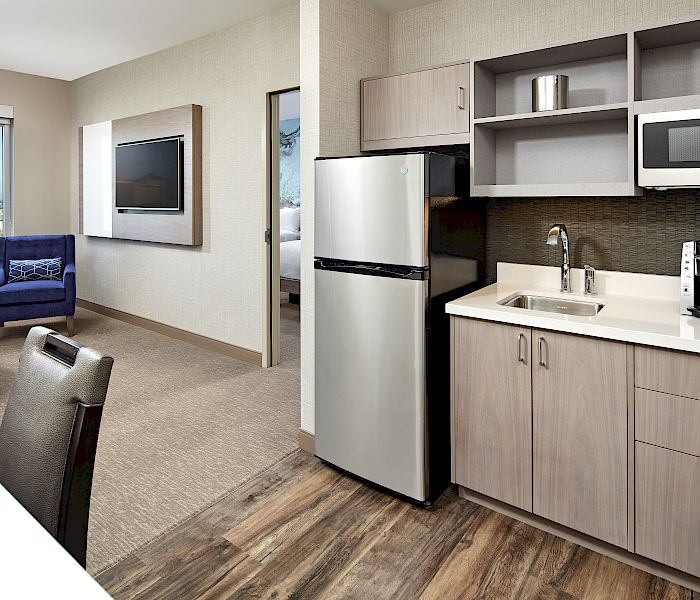

Full-time Missionary Services
We offer suites with a kitchenette for full-time missionaries to stay and be close to the temple. We offer a one queen-sized bed for senior missionaries and two twin-sized beds for missionary companions. These suites offer you a quiet place to study and eat your meals. All amenities of the hotel are available including a shuttle to the temple for your shifts.